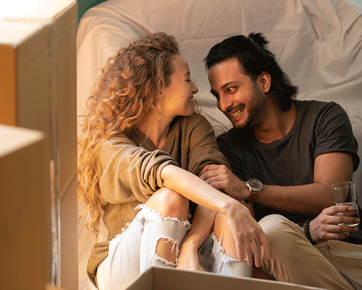

La bodega está ubicada a una altura de 1.200 metros, justo en el centro de los viñedos. Más de 49 hectáreas de hábitat desértico autóctono fueron conservadas, y forman parte del paisaje cotidiano de la bodega. El horizonte occidental está dominado por los cercanos Andes nevados, que se elevan a más de 6.100 metros.
La magnífica bodega fue diseñada teniendo en cuenta dos aspectos: la forma y la función.
Cada ala constituye en sí misma una pequeña bodega con dos niveles.
En el primero, tanques de acero inoxidable y cubas de roble francés posibilitan la fermentación y el almacenamiento.
En el nivel subterráneo, en tanto, el vino es añejado en barricas de roble. Ambos pisos permiten que el líquido circule de los tanques a las barricas a través de un sistema tradicional de transferencia por gravedad.
Quiénes somos
Sofía, mi abuela, nació en el año 1782 en el seno de una familia aristocrática holandesa. Su padre Heribert Van Westervelt, primer fundador de Vinosofía, ocupó destacados cargos estatales en la provincia de Gelderland, Reino de los Países Bajos. A principios del Siglo XIX se casó con Paul Hangest Baron d'Yvoy, miembro de una familia noble Holandesa originarios de la región de Champagne-Ardenne en Francia.
Soy Eva, heredera de Sofía, y junto a Marcos, somos emprendedores de un espíritu inquieto y sensible.
Vinosofía es nuestro homenaje a esta noble, interesante y sofisticada mujer que hoy se ve reflejada en cada vino y que nos invita a enaltecer esas ocasiones que merecen ser celebradas, que con el paso del tiempo al contrario de desaparecer, se vuelven eternos.
Tenemos mucho por decir, con excelencia, estamos difundiendo a nivel internacional el surgimiento de bodegas de primera línea en la Argentina.
Una nueva visión de la calidad -con plantaciones de varietales clásicos, preservación de vides antiguas y la utilización de tecnología de avanzada.